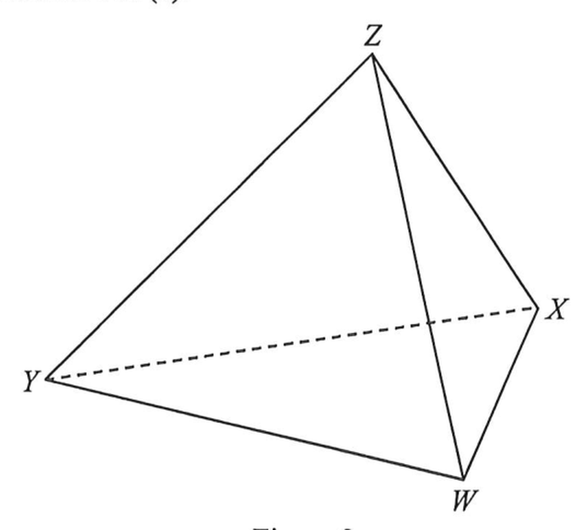
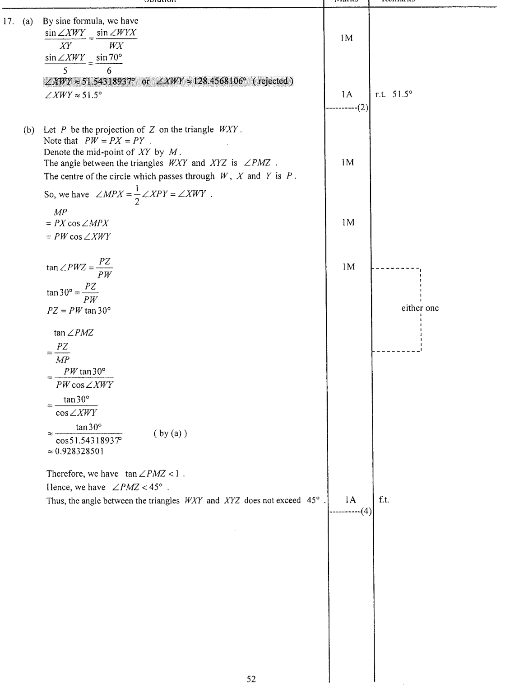

2023 DSE 數學 Paper 1 第 17 題 評卷參考＋詳解
題目（中文卷）
(a) 已知 $WXY$ 為三角形，其中 $WX = 6 \text{ cm}$ 、$XY = 5 \text{ cm}$ 及 $\angle WYX = 70^\circ$ 。求 $\angle XWY$ 。(2 分)
(b) 圖 3 顯示角錐體 $WXYZ$ ，其中 $WZ = XZ = YZ$ 。這角錐體的底為 (a) 所描述的三角形 $WXY$ 。

已知 $WZ$ 與三角形 $WXY$ 間的交角為 $30^\circ$ 。三角形 $WXY$ 與三角形 $XYZ$ 間的交角是否超過 $45^\circ$ ？試解釋你的答案。(4 分)
English version（英文卷題目）
(a) It is given that $WXY$ is a triangle, where $WX = 6 \text{ cm}$, $XY = 5 \text{ cm}$ and $\angle WYX = 70^\circ$. Find $\angle XWY$. (2 marks)
(b) Figure 3 shows the pyramid $WXYZ$, where $WZ = XZ = YZ$. The base of this pyramid is the triangle $WXY$ described in (a).

It is given that the angle between $WZ$ and the triangle $WXY$ is $30^\circ$. Does the angle between the triangles $WXY$ and $XYZ$ exceed $45^\circ$? Explain your answer. (4 marks)
官方評卷參考（Marking Scheme）

考評報告
（a）良好。超過65%考生能利用正弦公式求得∠XWY。 （b）甚差。大部分考生未能認出三角形WXY與三角形XYZ間的交角。